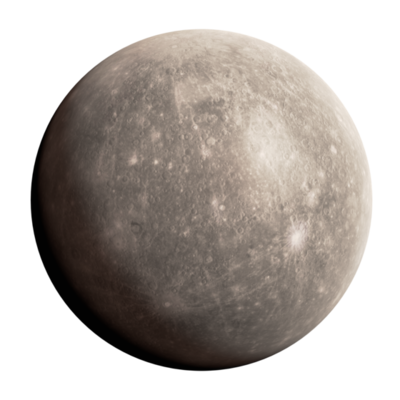
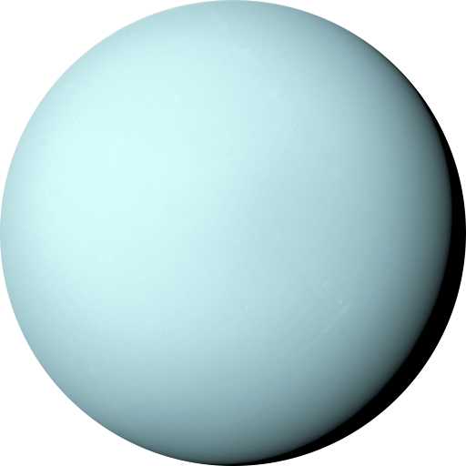
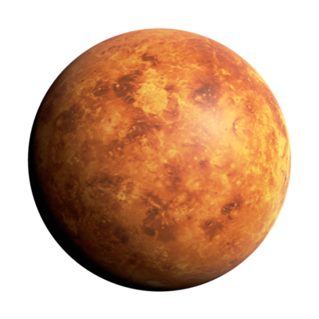
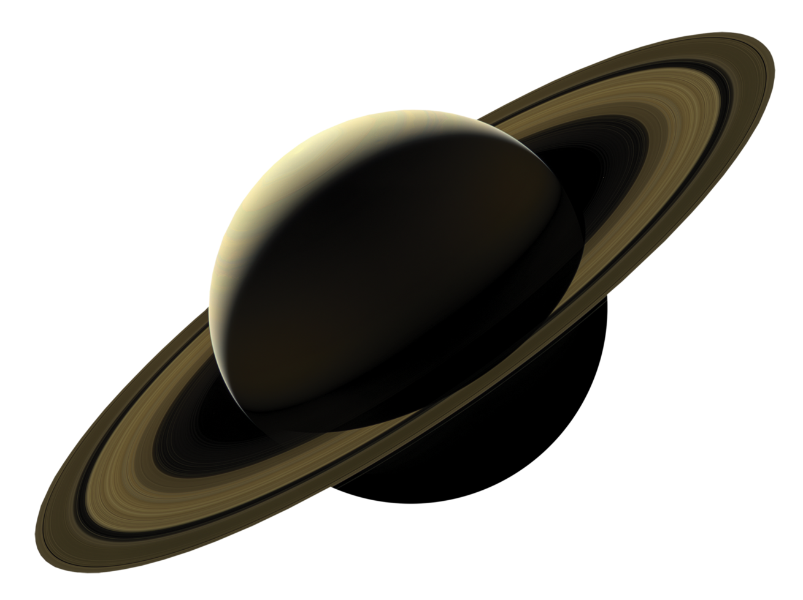

This is Earth. Earth is the third planet from the Sun and the only
astronomical ob ject known to harbor life. Th is is enabled by Earth
being an ocean world, the only one in the Solar System sustaining
liquid surface water. Almost all of Earth's water is contained in its
global ocean, covering 70.8% of Earth's crust. The remaining 29.2% of
Earth's crust is land, most of which is located in the form of
continental landmasses within Earth's land hemisphere

This is Mercury. It is the smallest planet in the Solar System, with
an equatorial radius of 2,439.7 kilometres (1,516.0 mi). Mercury is
also smaller—albeit more massive—than the largest natural satellites
in the Solar System, Ganymede and Titan. Mercury consists of
approximately 70% metallic and 30% silicate material.

This is Mars. Mars is the fourth planet from the Sun. The surface of
Mars is orange-red because it is covered in iron(III) oxide dust,
giving it the nickname "the Red Planet".[21][22] Mars is among the
brightest objects in Earth's sky, and its high-contrast albedo
features have made it a common subject for telescope viewing

This is Neptune. Dark, cold and whipped by supersonic winds, giant
Neptune is the eighth and most distant major planet orbiting our Sun.
More than 30 times as far from the Sun as Earth, Neptune is not
visible to the naked eye. In 2011, Neptune completed its first
165-year orbit since its discovery.

This is Pluto. Pluto (minor-planet designation: 134340 Pluto) is a
dwarf planet in the Kuiper belt, a ring of bodies beyond the orbit of
Neptune. It is the ninth-largest and tenth-most-massive known object
to directly orbit the Sun. It is the largest known trans-Neptunian
object by volume, by a small margin, but is less massive than Eris.

This is Uranus. Uranus is one of two ice giants in the outer solar
system (the other is Neptune). Most (80% or more) of the planet's mass
is made up of a hot dense fluid of "icy" materials water, methane, and
ammonia above a small rocky core. Near the core, it heats up to 9,000
degrees Fahrenheit (4,982 degrees Celsius).

This is Venus. Venus is the second planet from the Sun. It is a
terrestrial planet and is the closest in mass and size to its orbital
neighbour Earth. Venus is notable for having the densest atmosphere of
the terrestrial planets, composed mostly of carbon dioxide with a
thick, global sulfuric acid cloud cover.

This is Saturn. Saturn is the sixth planet from the Sun and the
second-largest in the Solar System, after Jupiter. It is a gas giant
with an average radius of about nine-and-a-half times that of
Earth.[26][27] It has only one-eighth the average density of Earth,
but is over 95 times more massive.
